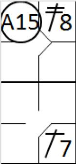

Jeux d’appel.
En accord avec les règles officielles du baseball,
un appel est l’acte d’un défenseur qui demande à l’arbitre de prendre une décision car il croit que l’équipe en attaque a violé une règle de jeu
. Ces violations peuvent être :
-
Un batteur qui ne respecte pas l’ordre au bâton
[OBR 6.03(b)]
;
-
Un coureur qui ne touche pas sa base de départ quand une balle est rattrapée de voler
[OBR 5.09(c)(1)] ;
-
Un coureur qui ne touche pas chaque base quand il avance ou retourne sur une base
[OBR 5.09(c)(2)].
Un appel peut être fait de deux manières différentes par la défense :
-
Après que l’action soit terminée et avant tout nouveau jeu
. Dans ce cas, lorsque le lanceur est en possession de la balle et qu’il est de retour sur le monticule, il doit juste quitter sa position et relayé la balle au défenseur de base concernée par l’appel. Quand le défenseur est en possession de la balle, il doit toucher sa base et demander un appel à l’arbitre. Dans le cas ou plusieurs coureurs sont passés sur la base, le défenseur doit désigner clairement le coureur concerné par l’appel et décrire les raisons de l’appel. Si ceci n’est pas respecté, l’appel ne sera pas accepté. A partir de ce moment, l’arbitre doit rendre son jugement.
Si le retrait est effectué sur un jeu d'appel qui est réalisé dans le cours naturel du jeu, le scoreur officiel accordera une assistance à chaque défenseur qui a contribué à ce jeu, à l’exception du joueur qui réalise le retrait. Si le jeu d'appel résulte d'un relais du lanceur vers un joueur après la fin du jeu précédent, le scoreur officiel accordera une assistance uniquement au lanceur
[OBR 9.10(a)(1) Comment]
.
Un coureur sur la deuxième base. Le batteur frappe un simple et le coureur touche le marbre et marque le point en omettant de toucher la troisième base.
 Exemple 9 :
le défenseur du champ gauche récupère la balle et la relaye au défenseur de la troisième base, touche sa base dans le cours naturel du jeu. Une assistance est créditée au défenseur champ gauche et le retrait est crédité au défenseur de la troisième base.
Exemple 9 :
le défenseur du champ gauche récupère la balle et la relaye au défenseur de la troisième base, touche sa base dans le cours naturel du jeu. Une assistance est créditée au défenseur champ gauche et le retrait est crédité au défenseur de la troisième base.

Exemple 10 :
On débute avec la même situation initiale. Après que l’action soit terminée, le lanceur retourne au monticule, puis le quitte, relaye la balle au défenseur de la troisième base qui touche sa base et fait un appel. Le retrait est crédité au défenseur de la troisième base, et une assistance est créditée pour le lanceur.
S’il y a plusieurs motifs d’appel parce que plusieurs coureurs n’ont pas touché une base, ou ne sont pas revenu toucher leur base lorsque qu’une ‘
fly
’ est rattrapé de voler, dans ce cas, la défense doit, toutefois, toujours faire un appel sur la bonne base et sur le bon coureur. Dans le cas contraire, si la défense fait une erreur dans l’appel, il ne sera plus possible ensuite de faire un appel contre le même coureur et la même base.
On doit noter qu’un appel ne doit pas être interprété comme un jeu ou tentative de jeu, c’est pourquoi il est parfaitement légal de faire plusieurs appels successivement.
NOTE :
Si le scoreur officiel s’aperçoit, durant le cours d’une action, qu’un coureur a effectué une violation des règles pouvant amener la défense à faire appel, une bonne idée consiste d’attendre le lancer suivant avant d’enregistrer le jeu sur la feuille de scorage, ce qui lui évitera de devoir effacer ce qu’il vient juste d’écrire. On doit se rappeler aussi que ni l’arbitre ni le scoreur officiel ne doit attirer l’attention de la défense sur le fait qu’un coureur peut faire l’objet d’un appel.
L’appel ne doit être effectuer que la propre initiative de l’équipe défensive. Si aucun appel n’est fait avant le premier lancer sur l
e
batteur suivant, la violation de la règle est ignorée
.